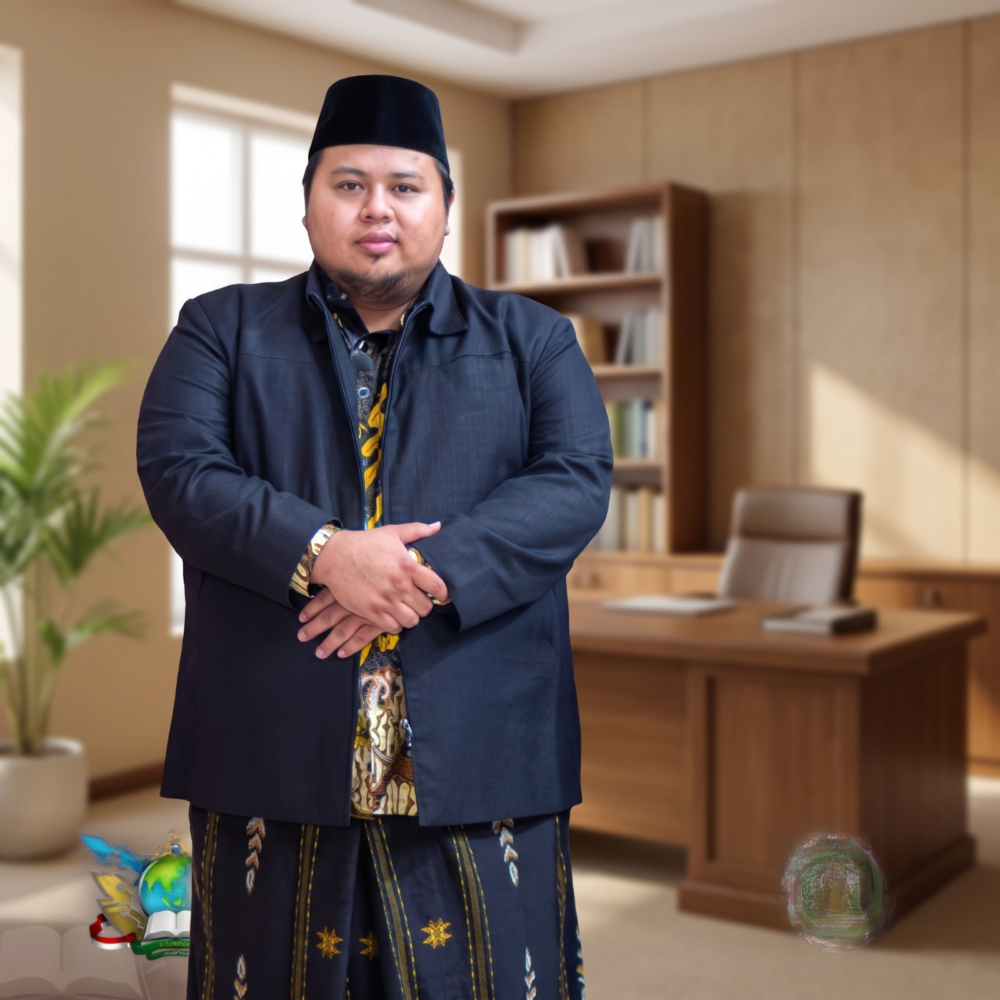
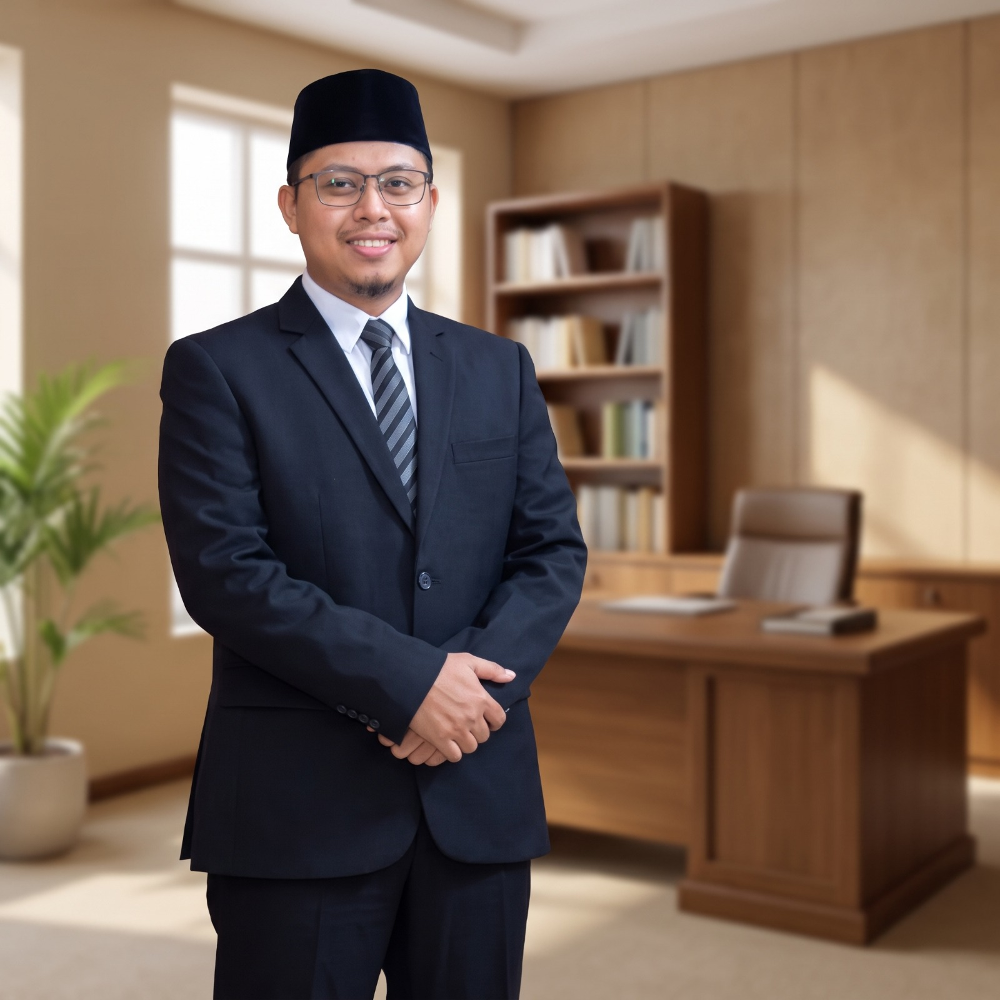

Pondok Pesantren Modern
Daarul Muttaqien Tangerang
“Mencetak Ulama Yang Intelek Dan Intelek Yang Ulama”
Mendidik generasi bertakwa, berakhlak mulia, dan berwawasan luas dengan memadukan kurikulum pesantren modern, kedalaman kutubutturos salafiyah, penguasaan dwi-bahasa internasional (Arab & Inggris), serta kurikulum nasional Kemenag & Kemendikbud di Tangerang, Banten.
Lembaga Pendidikan Terpadu
Sepatan & Pasar Kemis, Kab. Tangerang, Banten
Daarul Muttaqien membina para santri putra dan putri dalam lingkungan kampus terpisah yang nyaman dan kondusif. Menyeimbangkan tafaqquh fiddin dengan keunggulan akademik sains dan teknologi modern.
Keikhlasan, Kesederhanaan, Kemandirian, dan Ukhuwah Islamiyah.
Visi, Misi & Komitmen Kelembagaan
Mewujudkan lembaga pendidikan Islam yang berkualitas dan melahirkan kader pemimpin umat yang unggul serta berakhlak mulia.
“Menyelenggarakan ekosistem pendidikan berlandaskan pengabdian murni dan pengharapan ridha Allah SWT, yang tercermin dalam integritas, ketundukan, serta kepatuhan mutlak di muka bumi, serta didukung oleh budaya kerja yang proaktif, inovatif, dan kreatif.”
Misi Umum
Mempersiapkan individu yang unggul, berdaya saing tinggi, dan berintegritas guna mewujudkan generasi teladan (khoiru ummah) yang membawa kemaslahatan bagi peradaban manusia.
Misi Khusus
Membentuk kader ulama dan pemimpin strategis (mundzirul qoum) yang memiliki kedalaman ilmu agama (mutafaqqih fiddin), baik sebagai ilmuwan, akademisi, maupun praktisi profesional, yang siap dan kompeten dalam mengemban dakwah pemberdayaan, penguatan etika sosial, serta pembinaan umat secara berkelanjutan.

KH. Ahmad Madani, M.A.
Pengasuh Pondok Pesantren Modern Daarul Muttaqien 1 (Sepatan)
verified MTs & MA Terpadu“Mendidik Hati, Menajamkan Akal, Menegakkan Adab Islami.”
Pondok Pesantren Modern Daarul Muttaqien mendidik santri agar memiliki integritas tauhid yang kokoh, menguasai ilmu agama maupun umum, serta memiliki kecakapan hidup yang mandiri. Di era keterbukaan informasi saat ini, kami terus berkomitmen membimbing para santri dengan keteladanan, kasih sayang, dan kedisiplinan yang berkesinambungan.

KH. Ainul Haq Shonhaji, S.Pd.I
Pengasuh Pondok Pesantren Modern Daarul Muttaqien 2 (Pasar Kemis)
verified SMP Terpadu Berasrama“Membina Karakter Qur'ani, Mandiri, dan Berwawasan Global.”
Pondok Pesantren Modern Daarul Muttaqien 2 berikhtiar menanamkan akhlakul karimah, keteladanan ibadah, dan kemandirian sejak dini pada santri usia menengah. Dengan pengawalan tahfidz Al-Qur'an intensif, disiplin bahasa Arab dan Inggris harian, serta wawasan keilmuan kontemporer, kami menyiapkan santri menjadi generasi penerus yang berprinsip kokoh dan siap memimpin peradaban masa depan.
4 Kurikulum Terpadu
Integrasi sistem pendidikan komprehensif yang memadukan tradisi keilmuan pesantren dengan standar pendidikan modern dan nasional.
Kurikulum Pesantren Modern
Disiplin Pengasuhan 24 Jam
Penguasaan dwi-bahasa aktif (Arab dan Inggris) melalui lingkungan imersi harian, kedisiplinan hidup berasrama 24 jam penuh, pembentukan kepemimpinan santri (leadership), pidato tiga bahasa (muhadharah), dan penanaman kemandirian.
Kurikulum Pesantren Salafiyah
Metode Sorogan & Bandongan
Kajian literatur klasik keislaman (kutubutturos / kitab kuning) yang mendalam, meliputi penguasaan kaidah gramatika Nahwu-Sharaf, Aqidah, Fiqih Syafi'i, Ushul Fiqih, Tafsir, dan Hadits bersama para kiai dan asatidz senior.
Kurikulum Kementerian Agama (Kemenag)
Jenjang Formal MTs & MA
Standar nasional pendidikan madrasah terakreditasi resmi Kemenag RI untuk jenjang Madrasah Tsanawiyah (MTs) dan Madrasah Aliyah (MA), mencakup mata pelajaran PAI terpadu, Bahasa Arab madrasah, dan sains terintegrasi.
Kurikulum Kemendikbud
Jenjang Formal SMP & Umum
Implementasi Kurikulum Merdeka nasional untuk jenjang Sekolah Menengah Pertama (SMP) dan penguatan sains-teknologi, riset aplikatif, literasi numerasi modern, serta kesiapan bersaing di era global bagi seluruh peserta didik.
Siklus Kegiatan Harian Santri
Ritme kehidupan santri dirancang berkesinambungan mendidik ruhani, intelektual, dan kemandirian jasmani dari sepertiga malam hingga istirahat.
Ibadah sholat Tahajud, Hajat, Witir, istighfar, dan taqarrub ilallah.
Sholat Subuh berjama'ah di Masjid Jami' dilanjutkan wirid dan doa ma'tsurat.
Kajian kitab kuning bersama asatidz pengasuh dengan metode sorogan dan bandongan.
Sarapan pagi bersama di ruang makan santri, piket kebersihan asrama, dan mandi.
Pemberian mufrodat & vocabulary harian oleh bagian penggerak bahasa santri.
Kegiatan Belajar Mengajar resmi MTs, MA, dan SMP di ruang kelas terpadu.
Kultum siang, sholat Dzuhur berjama'ah serta halaqah tadarus tilawah Al-Qur'an.
Makan siang bergizi di dapur pondok dan istirahat sejenak di asrama santri.
Sholat Ashar berjama'ah dan pembacaan Al-Ma'tsurat sore bersama musyrif.
Ekstrakurikuler olahraga, seni hadroh, bela diri, klub bahasa, dan refreshing santri.
Mandi sore, makan malam, sholat Maghrib, setoran tadarus hafalan, dan sholat Isya berjama'ah.
Review percakapan bahasa (muhadatsah) dan penambahan kosa-kata malam santri.
Bimbingan belajar malam terarah bersama wali kelas & musyrif asrama (muwajjah).
Absensi kamar asrama, doa tidur sunnah, dan istirahat pemulihan fisik santri.
Jenjang Pendidikan 2 Kampus
Pondok Pesantren Modern Daarul Muttaqien mengelola 2 kampus strategis di Kabupaten Tangerang dengan kekhasan program yang saling melengkapi.
Madrasah Tsanawiyah (MTs) & Madrasah Aliyah (MA)
Pendidikan formal berbasis Kemenag RI yang berfokus pada penguatan ilmu agama, tahfidzul Qur'an mutqin, bahasa Arab & Inggris aktif, serta integrasi sains terpadu.
- check_circle Jenjang MTs (3 Tahun) & MA (3 Tahun) Berasrama
- check_circle Kajian mendalam Kutubutturos, Sanad Tahfidz, & Dwi-Bahasa
- check_circle Kesiapan tembus Universitas Timur Tengah (Al-Azhar) dan PTN Nasional
Lokasi: Jl. Raya Mauk Km 11 Kp. Cadas, Kec. Sepatan, Kab. Tangerang
Sekolah Menengah Pertama (SMP)
Pendidikan formal berbasis Kemendikbudristek RI yang terpadu penuh dengan kurikulum pesantren modern, menguatkan fondasi adab santri, akademik modern, dan karakter kemandirian.
- check_circle Jenjang SMP (3 Tahun) Berasrama dengan Kurikulum Merdeka
- check_circle Penguatan literasi digital, sains modern, dan karakter islami
- check_circle Pembiasaan ibadah praktis & dasar bahasa Arab-Inggris santri
Lokasi: Jl. Raya Cadas Kukun Kp. Ilat, Kec. Pasar Kemis, Kab. Tangerang
5 Bidang Ekstrakurikuler & Pengembangan Diri
Mewadahi kecerdasan majemuk dan potensi kepemimpinan santri putra dan putri.
1. Bela Diri
Ketangkasan jasmani, kedisiplinan, & pertahanan diri.
2. Olahraga
Kebugaran jasmani & sportivitas turnamen santri.
3. Kesenian
Seni bernuansa islami & kreativitas santri.
4. Multimedia
Literasi media visual & broadcasting santri.
5. Pramuka
Kepanduan, kemandirian, & regu kerja sama.
Galeri Dokumentasi Kegiatan Santri
Dokumentasi nyata kegiatan belajar, ibadah, dan pembinaan karakter di lingkungan Pondok Pesantren Modern Daarul Muttaqien.
KBM Terpadu di Kelas
Integrasi fasilitas multimedia dengan bimbingan asatidz pengajar.
Halaqah Qur'an Shubuh
Bimbingan tajwid dan setoran muraja'ah hafalan bersama musyrif.
Latihan Pramuka Gudep
Pelatihan kepemimpinan regu, baris-berbaris, dan kemandirian.
Pidato Tiga Bahasa
Melatih keberanian berbicara santri dalam bahasa Arab & Inggris.
Biaya Pendidikan & Alur Pendaftaran
Transparansi rincian biaya pendaftaran dan iuran bulanan santri baru tahun ajaran 2024/2025 untuk Kampus 1 dan Kampus 2.
Jenjang MTs & MA
Madrasah Tsanawiyah & Madrasah Aliyah
- Kasur santri asrama
- Seragam sekolah lengkap
- Lemari pakaian santri
- Paket kitab pegangan belajar
- SPP pendidikan formal & kepesantrenan
- Makan 3 kali sehari
- Fasilitas asrama santri & operasional listrik
Jenjang SMP
Sekolah Menengah Pertama Terpadu
- Kasur santri asrama
- Seragam sekolah lengkap
- Lemari pakaian santri
- Paket kitab pegangan belajar
- SPP pendidikan formal & kepesantrenan
- Makan 3 kali sehari
- Fasilitas asrama santri & operasional listrik
Alur Pendaftaran Santri Baru
Tahapan resmi proses penerimaan santri baru Pondok Pesantren Modern Daarul Muttaqien.
Registrasi Awal
Calon wali santri menghubungi nomor sekretariat kampus terkait atau nomor WhatsApp panitia untuk mendapatkan formulir registrasi.
Penyerahan Berkas
Mengunggah atau menyerahkan berkas administrasi: fotokopi rapor, akta kelahiran, Kartu Keluarga, dan surat keterangan sehat.
Ujian Seleksi Masuk
Pelaksanaan tes kemampuan baca Al-Qur'an, praktik ibadah sholat harian, wawancara calon santri dan orang tua, serta tes dasar.
Daftar Ulang & Masuk
Pengumuman hasil kelulusan, penyelesaian administrasi daftar ulang, pengambilan seragam & perlengkapan, serta kedatangan santri ke asrama.
Informasi Kontak & Lokasi 2 Kampus
Silaturahmi dan konsultasi pendidikan terbuka bagi segenap orang tua dan calon wali santri di Tangerang, Banten.
Kampus 1 (MTs & MA)
SepatanJl. Raya Mauk Km 11 Kp. Cadas, Kec. Sepatan, Kab. Tangerang, Banten.
Kampus 2 (SMP)
Pasar KemisJl. Raya Cadas Kukun Kp. Ilat, Kec. Pasar Kemis, Kab. Tangerang, Banten.
Senin – Sabtu: 08.00 – 16.00 WIB | Ahad: Kunjungan Wali Santri Terjadwal
Akses & Lokasi Kampus Tangerang
Kab. Tangerang, BantenKampus Daarul Muttaqien berlokasi strategis di koridor Cadas - Sepatan dan Cadas - Pasar Kemis, sangat mudah dijangkau dari Bandara Soekarno-Hatta, Kota Tangerang, maupun Tol Jakarta-Merak.
Daarul Muttaqien Tangerang
Sepatan (Kampus 1) & Pasar Kemis (Kampus 2), Tangerang, Banten